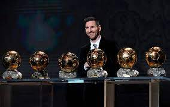
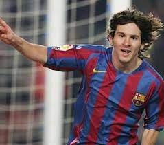
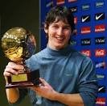
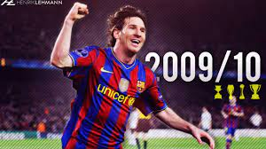
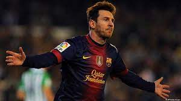
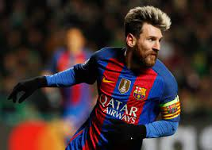
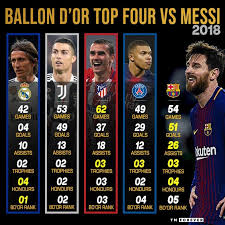
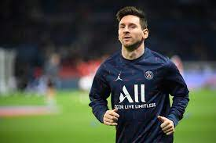
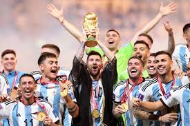

Lionel Andrés Messi Cuccittini, argentinski nogometaš, rojen 24. junija 1987, Rosario, Provinca Santa Fe, Argentina. Messi igra za argentinsko nogometno reprezentanco in Paris Saint-Germain. Velja za najboljšega nogometaša vseh časov. Je igralec z največ zlatimi žogami 7, največ zlatimi nogometnimi čevlji 6, največ Pichiciji - najboljši strelec državnega prvenstva 7, nedavno pa je bil s strani največjega nogometnega inštituta IFFHS razglašen za najbolj kreativnega nogometaša vseh časov. Messi drži rekord z največ doseženimi goli v koledarskem letu, ko jih je leta 2012 dosegel kar 91.

Je tretji od štirih otrok v družini. Njegov oče je Jorge Messi, ki je bil zaposlen kot direktor podjetja v Argentini. Njegova mama Celia Cuccittini je bila izdelovalka magnetov. Vsi člani družine so oboževali nogomet, zato je tudi Lionel že od otroštva neumorno brcal žogo. Nogomet je igral s starejšima bratoma Rodrigom in Matiasom ter z bratrancema Maximilianom in Emanuelom. Pri štirih letih je začel igrati nogomet pri domačem klubu Grandoli, kjer ga je treniral njegov oče. Pri nogometu ga je najbolj spodbujala in podpirala njegova babica Celia. Ta je malo pred njegovim 11. rojstnim dnem umrla. Njena smrt ga je zelo prizadela. Od tedaj vsak dosežen zadetek posveti babici in Bogu, kar je opazno med njegovim praznovanjem zadetka v igri. Pri šestih letih je začel trenirati pri nogometnem klubu Newell's Old Boys. Med šestletnim igranjem pri klubu je dosegel skoraj 500 zadetkov in dobil naziv ''Machine of 87.'' Njegova profesionalna kariera se je malo za tem stemnila, ko so mu pri 10. letih odkrili, da mu primanjkuje rastnega hormona. Družina je morala kljub zdravstvenemu zavarovanju plačevati še 925 evrov na mesec. Klub je sprva obljubil plačilo stroškov zdravljenja, vendar se pozneje tega ni držal.

Messijev neuradni derbi s katalonskim klubom je bil na tekmi proti FC Portu 16. novembra leta 2003. Manj kot leto za tem, pa je že nastopil na svoji prvi uradni tekmi za Barcelono. To je bilo na tekmi proti RCD Espanyol 16. oktobra leta 2004 in s tem postal eden najmlajših igralcev ki je zaigral za prej omenjen klub ter najmlajši, ki je zaigral za klub iz Katalonije in zaigral v La Ligi. Ko je za svoj klub zadel svoj prvi gol proti klubu Albacete Balompié 1. maja 2005 je bil star komaj 17 let, 10 mesecev in 7 dni. S tem je postal najmlajši igralec, ki je kadarkoli zadel v La Ligi ter igral za Barcelono. Barcelona mu je plačala zdravljenje, v zameno pa je bil Messi 21 let zvest Barceloni. V sezoni 2003–2004, njegovi četrti z Barcelono, je Messi hitro napredoval po klubskih vrstah in debitiral za rekordnih pet mladinskih ekip v eni kampanji. Potem ko je bil imenovan za igralca turnirja v štirih mednarodnih tekmovanjih pred sezono z Juvenile B , z ekipo je odigral le eno uradno tekmo, preden je napredoval v mladinsko A, kjer je na 11 ligaških tekmah dosegel 18 golov. Fizično je bil šibkejši od nasprotnikov, ki so bili pogosto precej starejši in višji, na treningih pa je delal na povečanju mišične mase in splošne moči, da se je lahko otresel branilcev. Proti koncu sezone se je vrnil v obe mladinski ekipi in mladincem B pomagal osvojiti ligo. Kampanjo je končal tako, da je dosegel štiri od svojih petih ekip s skupno 36 goli v vseh uradnih tekmovanjih. V sezoni 2004–2005 je bil Messi zagotovljen začetnik moštva B, odigral je 17 tekem v celotni kampanji in šestkrat zadel. Od njegovega debija novembra lani ni bil več vpoklican v prvo moštvo, toda v Oktobra 2004 so starejši igralci prosili menedžerja Franka Rijkaarda, da ga poviša.

Po dveh neuspešnih sezonah je Barcelona potrebovala prenovo, zaradi česar sta odšla Rijkaard in Ronaldinho. Ob odhodu slednjega je Messi dobil majico s številko 10. Julija je podpisal novo pogodbo z letno plačo 7,8 milijona evrov in tako postal najbolje plačani igralec kluba. Pred novo sezono so glavna skrb ostajale njegove pogoste poškodbe mišic, zaradi katerih je bil med letoma 2006 in 2008 skupno osem mesecev odsoten. Da bi se spopadel s težavo, je klub uvedel nove režime treninga, prehrane in življenjskega sloga, in mu dodelil osebnega fizioterapevta, ki bo z njim potoval na vpoklicih v argentinsko reprezentanco. Zaradi tega je Messi v naslednjih štirih letih ostal tako rekoč brez poškodb, kar mu je omogočilo, da je izkoristil svoj polni potencial. Kljub poškodbam v začetku leta je bil zaradi svojih nastopov leta 2008 ponovno izbran za podprvaka za zlato žogo in nagrado FIFA za najboljšega igralca leta, obakrat za Cristianom Ronaldom. S 23 ligaškimi goli Messija v tisti sezoni je Barcelona tri dni kasneje postala prvak La Lige in dosegla svoj peti dvojni dvojček. Kot najboljši strelec sezone Lige prvakov z devetimi goli, najmlajši v zgodovini turnirja, se je vrnil med finalom 27. maja v Rimu proti Manchester Unitedu. Barcelona je bila okronana za prvaka Evrope

Razcvet njegovega moštva se je nadaljeval v drugi polovici leta 2009, ko je Barcelona postala prvi klub, ki je dosegel šesterico in osvojil šest najvišjih trofej v enem letu. Po zmagah v Supercopa de España in UEFA Super Cup avgusta je Barcelona osvojila Svetovno klubsko prvenstvo FIFA proti Estudiantes de La Plata 19. decembra, Messi pa je s prsmi dosegel zmagoviti gol z 2:1. Pri 22 letih je Messi osvojil zlato žogo in nagrado FIFA za najboljšega igralca leta, obakrat z največjo razliko v glasovanju v zgodovini posamezne trofeje.
Messi je Barceloni zagotovil prvo trofejo v sezoni 2010–2011, Supercopa de España, tako da je dosegel hat-trick na povratni tekmi proti Sevilli s 4:0 po porazu na prvi tekmi. znova ključnega pomena na Clásicu 29. novembra 2010, prvem, ko je José Mourinho vodil Real Madrid, ko je Barcelona premagala svoje tekmece s 5:0. Messi je ekipi pomagal doseči 16 zaporednih prvenstvenih zmag, kar je rekord v španskem nogometu, zaključil pa se je s še enim hat-trickom proti Atlético Madridu 5. februarja 2011. Njegove klubske predstave leta 2010 so mu prinesle otvoritveno FIFA Ballon d'Or, združitev Ballon d'Or in nagrado FIFA za najboljšega igralca leta, čeprav je bila njegova zmaga deležna nekaj kritik zaradi pomanjkanja uspeha z Argentino na svetovnem prvenstvu 2010. Po starem formatu nagrade bi bil uvrščen tik pred vrh tri, zaradi zmage zaradi glasov mednarodnih trenerjev in kapetanov.
Ko je Messi ohranil svojo strelsko formo v drugi polovici sezone, je v letu 2012 podrl več dolgoletnih rekordov. 7. marca, dva tedna po tem, ko je dosegel štiri gole na prvenstveni tekmi proti Valencii, je zadel petkrat na tekmi zadnjega 16. kroga Lige prvakov proti Bayerju iz Leverkusna, kar je dosežek brez primere v zgodovini tekmovanja. Poleg tega, da je bil s petimi podajami najboljši podajalec, je s tem dosežkom postal najboljši strelec s 14 goli, s čimer je izenačil rekord Joséja Altafinija iz sezone 1962–63, prav tako pa je postal šele drugi igralec po Gerdu Müllerju, ki je bil najboljši strelec v štiri kampanje. Dva tedna pozneje, 20. marca, je Messi pri 24 letih postal najboljši strelec v zgodovini Barcelone in s hat-trickom proti Granadi presegel 57-letni rekord Césarja Rodrígueza, ki je dosegel 232 golov

Barcelona si je do začetka leta 2013 tako rekoč zagotovila naslov prvaka v La Ligi in na koncu izenačila rekord Real Madrida s 100 točkami prejšnje sezone. Vendar so se njihove predstave poslabšale v drugi polovici sezone 2012–2013, hkrati z odsotnostjo Vilanove zaradi slabega zdravja. Po izgubljenih zaporednih Clásicosih, vključno s polfinalom Copa del Rey, so skoraj izpadli v prvem izločilnem krogu AC Milan v Ligi prvakov, vendar je oživitev forme na povratni tekmi vodila do vrnitve s 4:0 z dvema goloma in asistenco Messija. Zdaj v svoji deveti seniorski sezoni z Barcelono je Messi 7. februarja podpisal novo pogodbo, s katero se je klubu zavezal do leta 2018, medtem ko se je njegova fiksna plača dvignila na 13 milijonov evrov. Kapetanski trak si je prvič nadel mesec dni pozneje, 17. marca, na prvenstveni tekmi proti Rayo Vallecanu; do takrat je postal taktična osrednja točka moštva do te mere, da so se mu verjetno kosali le nekdanji igralci Barcelone Josep Samitier, László Kubala in Johan Cruyff. Od njegovega razvoja v lažno devetko pred tremi leti je njegov prispevek k napadu moštva močno povečana; s 24 % v njihovi trojni zmagovalni kampanji se je njegov prispevek k zadetkom tisto sezono povečal na več kot 40 %.
Pod vodstvom novega trenerja in nekdanjega kapetana Luisa Enriqueja je Messi sezono 2014–2015 začel večinoma brez poškodb, kar mu je omogočilo, da je proti koncu leta podrl še tri dolgoletne rekorde. Hat-trick proti Sevilli 22. novembra je naredil najboljši strelec La Lige vseh časov, saj je presegel 59-letni rekord Telma Zarre z 251 ligaškimi goli. Tretji hat-trick, ki ga je 7. decembra dosegel proti mestnemu tekmecu Espanyolu, mu je omogočil, da je presegel Césarja Rodrígueza kot najboljši strelec Derbi barceloní vseh časov z 12 goli. Messi je spet zasedel drugo mesto na FIFA Ballon d'Or za Cristianom Ronaldom, predvsem zaradi njegovega drugega mesta z Argentino na svetovnem prvenstvu.
Messi je odprl sezono 2015–16 z dvakratnim zadetkom iz prostih strelov pri zmagi Barcelone s 5–4 (po podaljšku) nad Sevillo v UEFA Superpokalu. 16. septembra je postal najmlajši igralec, ki je zbral 100 nastopov v UEFA Ligi prvakov v remiju proti Romi (1:1). Po poškodbi kolena se je vrnil na igrišče 21. novembra in nastopil kot nadomestni igralec pri Barcelonini zmagi s 4:0 v gosteh nad tekmecem Real Madridom v El Clásicu. Messi je leto sklenil z zmago na finalu klubskega svetovnega prvenstva v nogometu 2015 20. decembra. , osvojil svojo peto klubsko lovoriko v letu 2015, ko je Barcelona premagala River Plate s 3:0 v Yokohami. 30. decembra je Messi zadel na svojem 500. nastopu za Barcelono, pri domači zmagi s 4:0 nad Real Betisom.

Messi je odprl sezono 2016–17 z dvigom Supercopa de España 2016 kot kapetan Barcelone v odsotnosti poškodovanega Andrésa Inieste; postavil je Munirjev zadetek pri zmagi proti Sevilli v gosteh z 2:0 na prvi tekmi 14. avgusta, nato pa zadel pri zmagi s 3:0 na povratni tekmi 17. avgusta. Tri dni kasneje je dosegel dva zadetka kot Barcelono zmagal s 6–2 proti Real Betisu na uvodni tekmi Lige prvakov 2016–17 La Messi je 13. septembra dosegel svoj prvi hat-trick v sezoni na uvodni tekmi kampanje UEFA Lige prvakov 2016–17 proti Celticu v 7– 0 zmaga; to je bil tudi Messijev šesti hat-trick v Ligi prvakov, največ vseh igralcev. Teden dni kasneje je Messi utrpel poškodbo dimelj v remiju 1:1 proti Atlético Madridu in bil zaradi poškodbe odsoten tri tedne. Svojo vrnitev je zaznamoval z golom, ki je dosegel tri minute po vstopu s klopi pri domači zmagi s 4:0 nad Deportivo de La Coruña 16. oktobra. Tri dni za tem je dosegel svoj sedemintrideseti klubski hat-trick kot Barcelona premagal Manchester City s 4–0. 1. novembra je Messi dosegel svoj 54. gol skupinskega dela Lige prvakov na tekmi Barcelone v gosteh s 3:1 proti Manchester Cityju, s čimer je presegel prejšnji rekord 53 golov, ki ga je držal Raúl.
Messi je odprl sezono 2017–2018 z unovčenjem enajstmetrovke na prvi domači tekmi, ki jo je Barcelona porazila z 1:3 proti Real Madridu v Supercopa de España. S tem je Messi tudi podaljšal svoj rekord doseganja zadetkov na El Clásicu, saj je bil gol njegov 24. uradni in 25. skupno. 9. septembra je Messi dosegel svoj prvi hat-trick v ligaški kampanji 2017–2018 proti Espanyolu v Derbi barceloní in s tem pomagal zagotoviti Blaugrani domačo zmago s 5:0 nad lokalnimi tekmeci. Messi je 12. septembra dvakrat zadel proti Gianluigiju Buffonu, ko je Barça v UEFA Ligi prvakov doma s 3:0 premagala italijanskega prvaka prejšnje sezone Juventus. 19. septembra je Messi štirikrat zadel mrežo v porazu Eibarja s 6:1 na Camp Nou v La Ligi. Tri tedne kasneje, 1. oktobra, je Messi presegel svojega nekdanjega soigralca Carlesa Puyola in postal tretji najvišji igralec v ligi. zgodovini kluba, ko je pomagal Barçi premagati Las Palmas s 3:0, tako da je asistiral pri uvodu Sergia Busquetsa in kasneje sam dodal dve v svoji 594. uradni tekmi za klub; ligaška tekma je bila odigrana za zaprtimi vrati na Camp Nou zaradi nasilja v Kataloniji v zvezi s potekajočim referendumom o neodvisnosti.

Z odhodom nekdanjega kapetana Andrésa Inieste maja 2018 je bil Messi imenovan za novega kapetana ekipe za naslednjo sezono. 12. avgusta je po zmagi nad Sevillo z 2:1 osvojil svoj prvi naslov kot kapetan Barcelone, Supercopa de España. 19. avgusta je Messi dvakrat zadel in pomagal Barceloni premagati Alavés s 3:0 na prvi tekmi La Lige v sezoni, s svojim prvim golom, prostim strelom, ki ga je zakotalil pod skačučo steno Alavésa, in se tako vpisal v zgodovino kot 6000. gol Barcelone v La Liga. 18. septembra je Messi dosegel hat-trick pri domači zmagi s 4:0 nad PSV Eindhovnom na uvodni tekmi Barcelonine skupine Lige prvakov v sezoni, s čimer je postavil nov rekord po številu hat-trickov v tekmovanju, z osmimi. 20. oktobra je Messi zadel pri domači zmagi nad Sevillo s 4:2, a je bil pozneje v 26. minuti izgnan, potem ko je nerodno padel in si poškodoval desno roko; testi so pozneje potrdili, da si je zlomil radialno kost, zaradi česar je bil izključen za približno tri tedne. 8. decembra je Messi zadel dva prosta strela – njegov deveti in deseti gol iz postavljenih strelov v koledarskem letu – pri zmagi s 4:0 v gosteh nad tekmecem Derbi barceloní Espanyolom v La Ligi; to je bilo prvič v zgodovini, da mu je uspel tak podvig v ligi. Njegov prvi zadetek je bil tudi njegov 10. ligaški zadetek v sezoni, s čimer je postal prvi igralec, ki je dosegel dvomestno število v La Ligi v 13 zaporednih sezonah.
5. avgusta 2019 je bilo objavljeno, da bo Messi izpustil Barcelonino turnejo po ZDA, ker je staknil poškodbo desnega meča. 19. avgusta je bil Messijev odrezan gol z roba kazenskega prostora proti Real Betisu nominiran za nagrado FIFA Puskás 2019. Kasneje tisti mesec je doživel še en neuspeh po vrnitvi poškodbe meča, zaradi katere ni mogel igrati na uvodni tekmi sezone; zaradi tega je bil izključen za nedoločen čas in pričakovali so, da se bo v akcijo z Barcelono vrnil šele po septembrskem reprezentančnem premoru. 2. septembra je bil Messi uvrščen med tri finaliste tako za nagrado FIFA Puskás 2019 kot za najboljšo FIFA 2019 Nagrada za moške igralce, slednjo je prejel Messi 23. septembra.
Po vse večjem nezadovoljstvu z usmeritvijo Barcelone na igrišču in izven njega je Barcelona sporočila, da je Messi 25. avgusta 2020 klubu poslal "dokument, v katerem je izrazil željo po odhodu". Objava je požela velik medijski odziv, tudi s strani sedanjih in nekdanjih soigralcev ( ki je podprl Messijevo izjavo) in katalonski predsednik Quim Torra. 26. avgusta je športni direktor Barcelone Ramon Planes ponovil željo kluba, da "zgradi ekipo okoli najpomembnejšega igralca na svetu" in potrdil, da bo Messi lahko odšel le, če bo kupec plačal odkupno klavzulo v višini 700 milijonov evrov; prijavljeno možnost predčasne prekinitve, ki je na voljo v Messijevi pogodbi (ki bi mu omogočila, da brezplačno zapusti klub), je bilo mogoče uporabiti le, če je svojo odločitev sporočil Barceloni do 31. maja 2020, čeprav so igralčevi predstavniki trdili, da bi moral biti rok postavljen do 31. avgust, zaradi prekinjene sezone 2019–20. 30. avgusta je La Liga izdala izjavo, v kateri navaja, da sta Messijeva pogodba in odkupna klavzula še vedno aktivni.
10. avgusta se je Messi pridružil francoskemu klubu Paris Saint-Germain. Podpisal je dveletno pogodbo do junija 2023 z možnostjo dodatnega leta. Messi je za svojo ekipo izbral številko 30, ki jo je nosil kot najstnik, ko je debitiral za seniorje Barcelone. Messi je za klub debitiral 29. avgusta, ko je nastopil kot zamenjava v drugem polčasu gostujoče zmage nad Reimsom z 2:0 v Ligue 1. Prvič je začel in debitiral v Ligi prvakov za klub na tekmi z 1:1. remi v gosteh proti Club Bruggeju 15. septembra. Štiri dni kasneje je Messi doma debitiral za PSG pri zmagi z 2:1 nad Lyonom. 28. septembra je dosegel svoj prvi gol za klub, z udarcem z roba 18-metrovke pri zmagi skupinskega dela Lige prvakov z 2:0 nad Manchester Cityjem Pepa Guardiole. 21. novembra je Messi dosegel svoj prvi gol v Ligue 1 pri domači zmagi nad Nantesom s 3:1. Kasneje istega meseca je še petič v karieri prispeval hat-trick s podajami, ko je PSG v gosteh premagal Saint-Étienne s 3:1. Messi je v koledarskem letu dosegel 40 golov na klubski in mednarodni ravni ter pomagal Argentini osvojiti Copa América 2021 in 29. novembra prejel rekordno sedmo zlato žogo.

Potem ko se je Messi prilagodil novemu okolju in se pod vodstvom novega trenerja Christopheja Galtierja ustalil v Parizu, se je vrnil k svoji najljubši vlogi prostega napadalca; postavljen je na svoj priljubljeni položaj igralca za dvema napadalcema, v napadalnem trizobu z Neymarjem in Kylianom Mbappéjem, ki je hitro povrnil svojo formo iz prejšnje sezone, ko je novo sezono začel 31. julija, ko je dosegel prvi gol za PSG pri rezultatu 4–0. zmago nad Nantesom na Trophée des Champions, s čimer je osvojil svojo drugo lovoriko s PSG. V finalu svetovnega prvenstva v nogometu leta 2022 18. decembra je Messi zabeležil svoj rekordni 26. finalni nastop na svetovnem prvenstvu na stadionu Lusail. Messi je dosegel uvodni zadetek Argentine z enajstmetrovke in s tem postal prvi igralec od uvedbe osmine zadnjega kroga leta 1986, ki je dosegel gol v vsakem krogu enega samega svetovnega prvenstva. Francoski napadalec Kylian Mbappé, ki je dvakrat zadel v dveh minutah, je Messi znova zadel v podaljšku in obnovil vodstvo Argentine, preden je Mbappé ponovno izenačil Francijo. Po podaljšku je bilo izenačeno 3:3, tekma pa je šla v streljanje enajstmetrovk. Messi je dosegel prvi zadetek Argentine v streljanju, pri čemer je Argentina na koncu zmagala s 4–2, s čimer se je končalo 36-letno čakanje države na pokal. Messi je prejel zlato žogo za igralca turnirja in tako postal prvi igralec, ki jo je osvojil dvakrat. S sedmimi goli na sedmih tekmah je končal na drugem mestu v boju za zlati čevelj, z enim za Mbappéjem. S svojim nastopom in dvema goloma v finalu je Messi prehitel Matthaüsa kot igralca z največ nastopi na svetovnem prvenstvu (26), Peléja pa kot igralec z največ neposrednimi zadetki na svetovnem prvenstvu (21 – 13 golov in 8 podaj). Tekma na prvenstvu je bila splošno priznana kot ena najboljših vseh časov, medijska pokritost pa jo je močno oblikovala kot dvoboj med Messijem in Mbappéjem. Po tekmi je Messi potrdil, da se ne namerava upokojiti iz reprezentance, in rekel: "Želim še naprej igrati kot prvak".

| Klubi v katerih je igral: |
|---|
| 2002–2003 Newells Old Boys |
| 2004-2021 Barcelona |
| 2021- PSG |